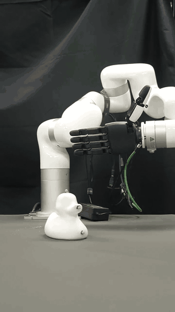
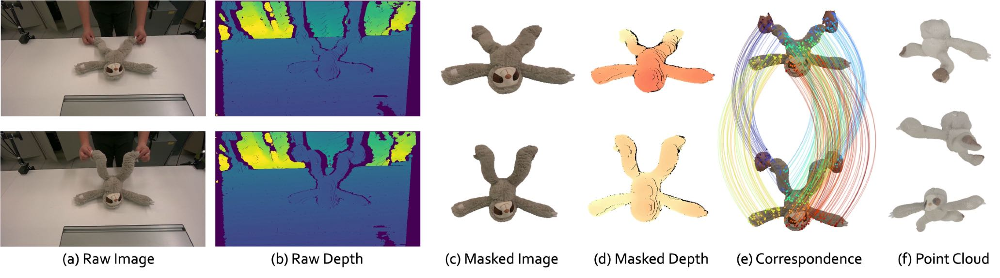
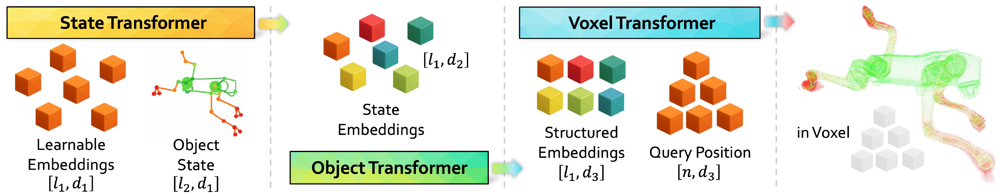
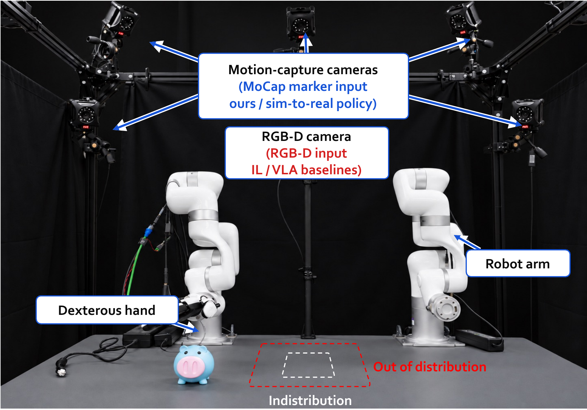

AWR · GEOMETRY FOR ROBOT INTERACTION
Agentic World
Representation
Learn object geometry. Use it to guide robot actions.
Agentic World Representation (AWR) learns structured object geometry from sparse keypoints. Robots use its geometric queries and gradients to optimize grasps, generate demonstrations, and learn policies.

Geometry
to action
THE AWR WORKFLOW
Observe an object. Learn its geometry. Optimize an action.02 / OBJECT REPRESENTATION
Object geometry
that a robot can query.
AWR conditions geometry on object structure and current keypoints. At any 3D query point, it predicts occupancy and signed distance, with surface normals derived from the distance field.
Structure + current keypoints
A location in 3D
Occupancy · SDF · normal
Geometry for
contact and motion.
Occupancy
Query which locations belong to the reconstructed object geometry.
Signed distance
Measure distance to the surface to guide contact and penalize penetration.
Surface normal
Take the spatial gradient of signed distance to find the outward surface direction.
Interactive geometry illustration · switch the object and query type to inspect the AWR interface.
Observations for learning object geometryRGB-D observations and tracked structure＋
RGB-D OBSERVATIONS → TRACKED GEOMETRY
View full image
Interactive capture illustration
OBSERVATIONS FOR AWR
Object state and geometry
AWR takes tracked structural points as the current object state. Geometry observations supervise the learned field.
The interactive illustration shows an object surrounded by capture cameras. Switch between its surface and point cloud to explore the geometry.
Inside the AWR representationShared geometry and gradients for action＋

SHARED OBJECT GEOMETRY
Structure and configuration
AWR separates persistent object structure from the current keypoint configuration. A shared model within each object family predicts occupancy and signed distance; spatial distance gradients provide surface normals.
GRADIENTS FOR ACTION
Optimize through frozen geometry
AWR uses the action-differentiable neural object, denoted ∂Oθ, to connect geometry to interaction. Its learned weights stay fixed while task gradients update robot configurations.
The same geometric query interface applies across the object families below.
03 / OBJECT ZOO
AWR across
object families.
AWR represents articulated mechanisms, skinned characters, and soft objects. Each family has its own shared model. These reconstructions show how geometry follows changes in object state.
AWR OCCUPANCY F1
Protocols & comparisons- Articulated / rigid
- 96.54%
- Skinned
- 95.02%
- Soft
- 96.47%
Explore all 27 animated objects10 articulated · 7 skinned · 10 soft＋
AWR geometry supplies the contact and distance terms needed to optimize a grasp.
04 / GEOMETRY TO ACTION
Learn a grasping
policy with AWR.
AWR connects grasp optimization to policy learning. Task losses guide hand configurations; the resulting trajectories supply demonstrations for a policy that acts on observed object states.
Learn the geometry, then keep its weights fixed. Grasp losses pass through the AWR fields and hand kinematics to update the joint configuration.
01 / OPTIMIZE THE GRASP
Optimize the hand configuration.
- Input
- Output
AWR method illustration
Simulation · four objects
The policy trained on AWR demonstrations is evaluated on the real robot below.
05 / REAL-WORLD EVALUATION
Deploy the policy
on a real robot.
The policy learned from AWR demonstrations controls a robot arm and XHand. Motion capture supplies object-state observations; grasp success is measured at training-region and held-out placements.
EVALUATING NEW OBJECT PLACEMENTS
Grasping beyond
the training region.
OOD: outside the 8 × 8 cm training square, within 24 × 24 cm.
Compare all methodsRobot setup and evaluation protocolRobot arm · XHand · motion capture · ID/OOD regions＋

Object observations drive the policy.
Motion-capture cameras track the current object state. The policy learned from AWR demonstrations maps these observations to actions for the robot arm and XHand.
- ID positions
- Central 8 × 8 cm square
- OOD positions
- Outside ID, within 24 × 24 cm
- Evaluation
- 13 trials per object and placement split
06 / DETAILED RESULTS
Evaluate AWR.
Compare AWR on geometry reconstruction, component ablations, simulated grasp optimization, and real-robot success. The tabs include evaluation protocols and baseline results.
PROJECT & BACKGROUND
Project and prior work
Agentic World RepresentationStructured geometry for grasp optimization and policy learning
WorldString: Actionable Object RepresentationPrior work on object-specific reconstruction; source of the architecture and RGB-D figures above